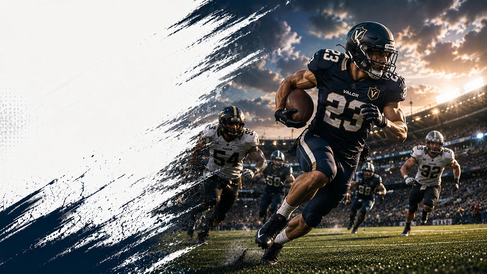

EVERY DOWN. EVERY GAME.
一球に、
すべてを。
仲間の勝利も、ライバルの一戦も。
大学アメフトの熱を、ここから。
関東の大学アメフト（関東学生アメリカンフットボール連盟の1部TOP8・BIG8）の順位・勝ち点・試合結果・日程を、連盟が公表する星取表をもとに毎日更新しています。勝ち点は勝ち3点・引き分け1点・負け0点で、同じ勝ち点で並んだときは「順列」で上下が決まります。読み方は関東大学アメフト順位表の見方、BIG8の最新順位はBIG8 順位表、全試合の結果は試合結果一覧で確認できます。強いチームを知りたい方は関東の強豪校を成績データで比較した記事、初めて観戦する方は試合時間とルールの入門ガイドもどうぞ。
01 / MATCH CENTER
試合の熱を、追いかけよう。
最新の掲載結果
次のキックオフ
情報更新：2026-11-24。連盟公表データを掲載しています。ライブ速報ではありません。
02 / THE LEAGUES
あなたのリーグは、ここに。
TOP8
8チーム · 2026 SEASON
日程・順位・チームを見る ↗KANTO COLLEGE FOOTBALLBIG8
20チーム · 2026 SEASON
日程・順位・チームを見る ↗掲載対象は関東学生TOP8・BIG8です。ブロック名・年度は各表で確認できます。
03 / FOOTBALL DATABASE
あの対戦を、もう一度。
年度・リーグ・大学から試合結果と順位表を探す。
過去の記録を調べる →04 / JOURNAL
アメフトを、もっと深く。
練習・上達 2026-11-25
アメフトのプレイブックの覚え方｜プレーコールを分解して頭に入れる手順
アメフトのプレイブックが覚えられない部員向けに、プレーコールを要素に分解する考え方、書く・隠す・声に出すなどの暗記法、ポジション別の覚える範囲、練習と映像での定着の流れを、公開情報をもとに整理します。
怪我と予防 2026-11-24
アメフトの突き指・指の怪我｜その場の対処と受診の目安、予防の考え方
アメフト部員が経験しやすい突き指などの指の怪我について、整形外科医が監修する公開資料をもとに、応急処置のRICE、やってはいけない対応、受診の目安、テーピングやグローブの位置づけを整理します。
栄養 2026-11-24
アメフトの貧血対策｜鉄不足のサインと食事・検査の考え方
アメフト部員が知っておきたいスポーツ貧血（鉄欠乏）について、起こる仕組み、疲れとの見分けにくさ、フェリチン検査、食事での鉄の摂り方、サプリや鉄剤の注意点を、公的資料と専門医の解説をもとに整理します。